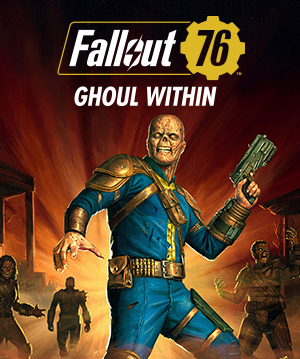

《Fallout 76：內在屍鬼》更新資訊
今天的〈內在屍鬼〉更新會為所有廢土人都帶來變身屍鬼的機會、全新遊戲機制，以及屍鬼專屬的輔助能力卡。解鎖另一個體驗阿帕拉契的全新方式。
各位準備好釋放內在的屍鬼了嗎？

今天的〈內在屍鬼〉更新會為所有廢土人都帶來變身屍鬼的機會、全新遊戲機制，以及屍鬼專屬的輔助能力卡。解鎖另一個體驗阿帕拉契的全新方式。
各位準備好釋放內在的屍鬼了嗎？
貝塞斯達（Bethesda）會在每個季度發布一張社群行事曆，作為遊戲未來幾週的活動路線圖。這張行事曆包含了《異塵餘生76（Fallout 76）》所有即將推出的更新與活動。
了解更多